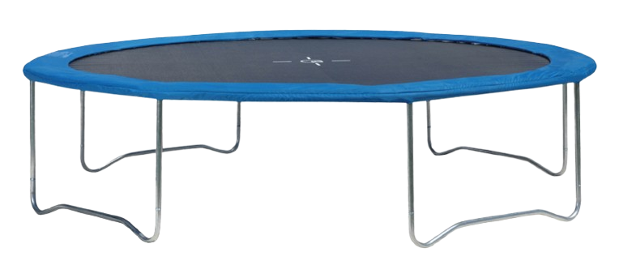

🎯 Percobaan: Manusia Melompat di Trampolin
Perhatikan bagaimana gaya pegas pada trampolin membuat manusia melompat tinggi berulang kali!
LANTAI

TRAMPOLIN
MANUSIA
📊 Data Pengamatan
Tinggi Lompat:
200px
Gaya Pegas:
Kuat
Jumlah Lompatan:
0
Status:
Siap
💡 Kesimpulan
Trampolin menggunakan gaya pegas untuk mendorong manusia ke atas saat melompat.
Semakin kuat tekanan pada trampolin, semakin tinggi lompatan yang dihasilkan.
Gaya pegas menyimpan energi ketika trampolin tertekan dan melepaskannya saat kembali ke bentuk semula.
Lompatan berulang terjadi karena energi terus disimpan dan dilepaskan secara berantai.